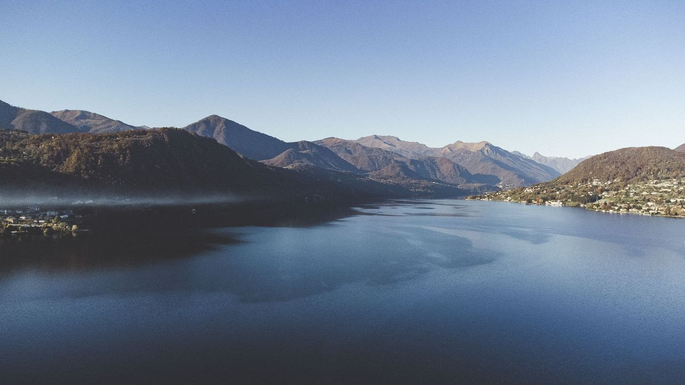
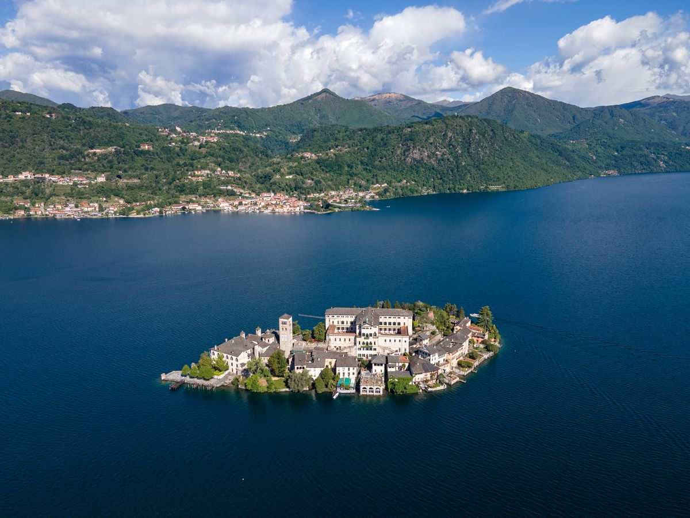
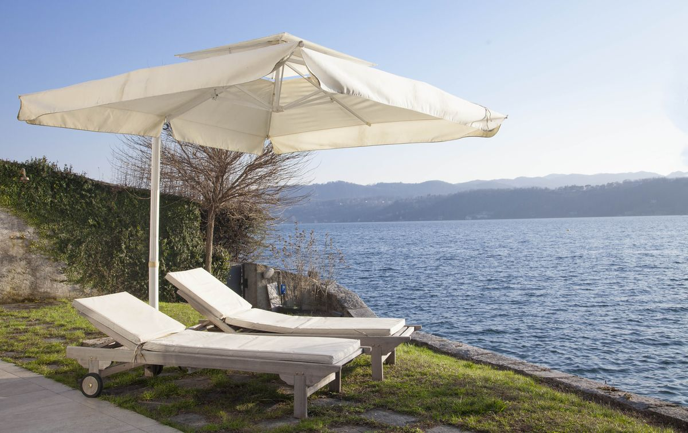

Die italienischen Seen bieten traumhafte Landschaften mit Alpengipfeln und pastellfarbenen Dörfern. Während der Lago Maggiore die Reiseführer dominiert, bietet der Ortasee ein alternatives Erlebnis, nur 20 Minuten weiter westlich — so, wie sich Italien anfühlte, bevor die Reisebusse kamen.
Die Atmosphäre: Grand Tourismus oder stille Intimität
Der Lago Maggiore erstreckt sich über mehr als 65 Kilometer und mehrere Regionen. Seit dem 19. Jahrhundert zog er aristokratische Besucher an und inspirierte literarische Persönlichkeiten wie Hemingway. Das westliche Ufer bei Stresa lockt jährlich über 4 Millionen Besucher an, davon allein im August etwa 1,2 Millionen Touristen. Die Atmosphäre bleibt elegant, aber überfüllt und kommerziell ausgerichtet.
Der Ortasee misst gerade einmal 13 Kilometer in der Länge, bei einer Fläche von 18,2 km². Das mittelalterliche Dorf Orta San Giulio besticht durch autofreie Kopfsteinpflastergassen und einen intimen zentralen Platz. Die Insel San Giulio, „die Insel der Stille" genannt, beherbergt ein aktives Benediktinerkloster, das Kontemplation über Kommerz stellt. Reiseautoren beschreiben den Ortasee als das „bestgehütete Geheimnis der italienischen Seen", da er sich der Entwicklung des Massentourismus widersetzt hat.
Landschaft und Kulisse: Schauspiel oder Seele
Der Lago Maggiore zeigt seine Erhabenheit durch mediterrane Vegetation an den südlichen Ufern und dramatische Alpenhänge im Norden. Die Borromäischen Inseln beeindrucken mit gepflegten Gärten, barocken Palästen und einer bemerkenswerten Tierwelt.
Der Ortasee umgibt sich mit üppigen Wäldern unterhalb des Monte-Rosa-Massivs, des zweithöchsten Gipfels Europas. Der See durchlief in den 1990er-Jahren eine ökologische Erholung und wandelte sich von industrieller Verschmutzung zu einem der saubersten Seen Italiens. Die Basilika und der Glockenturm der Isola San Giulio erzeugen intime Spiegelungen im stillen Wasser.

Aktivitäten: organisierte Touren oder persönliche Entdeckung
Der Lago Maggiore setzt auf Fährrundfahrten, die die Borromäischen Inseln — Isola Bella, Isola Madre und Isola dei Pescatori — verbinden, dazu die Seilbahn auf den Monte Mottarone und die botanischen Gärten der Villa Taranto. Diese Erlebnisse folgen festgelegten Routen mit großen Reisegruppen und Souvenirläden.
Der Ortasee belohnt Entdecker mit besinnlichen Aktivitäten. Gäste genießen einen Espresso auf der Piazza Motta, fahren mit Holzbooten zum „Weg der Stille und der Meditation" der Isola San Giulio und besteigen den Sacro Monte di Orta, ein UNESCO-Weltkulturerbe mit 20 mit Fresken geschmückten Kapellen, die über einen alten Wald verstreut sind. Die wichtigste Aktivität besteht darin, einfach präsent zu sein, statt Sehenswürdigkeiten abzuklappern.
Gastronomie: internationale Eleganz oder piemontesische Seele
Die Restaurantszene des Lago Maggiore spiegelt seinen internationalen Charakter durch gehobene Hotelküche und traditionelle Trattorien in Stresa wider. Hochwertige Häuser bieten piemontesische und lombardische Küche zu Premiumpreisen, die die touristische Nachfrage widerspiegeln.
Am Ortasee liegt die Villa Crespi, Heimat des mit drei Michelin-Sternen ausgezeichneten Restaurants von Chefkoch Antonino Cannavacciuolo, nur einen Kilometer von der Villa Volpe entfernt. Das Degustationsmenü „Mettici l'Anima" (Leg deine Seele hinein) steht für eine gefeierte kulinarische Reise. Zu den weiteren bemerkenswerten Häusern zählen die Locanda di Orta, Al Sorriso im nahen Soriso und Giardinetto in Pettenasco. Die umliegende Region Piemont gilt als das gastronomische Herzland Italiens, mit Trüffeln, Barolo-Weinen, Gorgonzola-Käse und den Ursprüngen der Slow-Food-Bewegung.

Anreise: gleichermaßen einfach, bei der Ankunft sehr verschieden
Der Knotenpunkt Stresa am Lago Maggiore liegt etwa eine Stunde vom Flughafen Mailand-Malpensa entfernt, mit direkten Bahnverbindungen. Fährdienste verbinden die Uferorte regelmäßig.
Der Ortasee liegt 20 Minuten westlich des Lago Maggiore, rund 45 Minuten von Malpensa und 80 Kilometer von Mailand entfernt. Orta San Giulio verfügt über keinen großen Bahnhof; der nächste ist Orta-Miasino. Diese infrastrukturelle Einschränkung trägt zu seinem Schutz vor dem Massentourismus bei. Die beiden Seen bleiben durch den Monte Mottarone getrennt, der von den beliebten Aussichtspunkten des Lago Maggiore aus sichtbar ist.

Der Preis der Schönheit: besseres Preis-Leistungs-Verhältnis, besseres Erlebnis
Der Lago Maggiore, insbesondere Stresa, verlangt Premiumpreise. Hotels am Wasser berechnen in der Hochsaison 300 bis über 600 € pro Nacht; Tickets für die Borromäischen Inseln kosten 17 bis 25 € pro Person. Die Restaurantpreise spiegeln die touristische Nachfrage wider, mit Parkschwierigkeiten in den belebten Orten.
Der Ortasee bietet ein besseres Preis-Leistungs-Verhältnis für Erlebnisse vergleichbarer Qualität. Unterkunft, Gastronomie und Sehenswürdigkeiten bleiben preislich moderater, ohne Abstriche bei der Qualität. Das Erlebnis wirkt oft luxuriöser, dank persönlicher, großzügiger und entspannter Begegnungen.
Ihr perfekter Aufenthalt: die Villa Volpe am Ortasee
Die Villa Volpe ist eine moderne, von einem Architekten entworfene Villa am Seeufer, am Ostufer des Ortasees in Orta San Giulio. Statt eines Hotelzimmers oder einer Wohnung fungiert sie als privates Haus mit Garten, Strandzugang und Blick auf die nachts beleuchtete Isola San Giulio.
Die Villa umfasst zwei geräumige Doppelschlafzimmer, einen hellen offenen Wohnbereich mit raumhohen Fenstern, eine voll ausgestattete Küche, Klimaanlage und kostenloses WLAN. Der private Garten bietet direkten Zugang zum Wasser, mit Außendusche und Möbeln am Seeufer. Anders als die großen Hotels in Stresa bietet die Villa Volpe vollständige Barrierefreiheit für Rollstuhlfahrer, einschließlich Rampenzugang, breiter Korridore, eines barrierefreien Badezimmers mit Haltegriffen und beweglichem Duschsitz sowie auf Anfrage eines Personenlifters für den Seezugang.
Die Villa Volpe liegt einen Kilometer von der Villa Crespi entfernt, sodass die Gäste die Freiheit einer privaten Villa mit erstklassiger Gastronomie in Gehweite eines Abends verbinden können. Die Villa wird von Alberto Broggi geführt, dessen Familie seit 1956 am Ortasee ansässig ist; sie hat über 570 Gäste empfangen und eine Airbnb-Bewertung von 4,91 Sternen erzielt. Bei einer Direktbuchung sparen Sie 15 % gegenüber dem Airbnb-Preis.
Das Fazit
Der Lago Maggiore liefert auf großartige Weise beeindruckende Barockpaläste, große Hotels und Fähren zum Inselhüpfen. Reisende jedoch, die Stille, Intimität und authentische Erlebnisse dem Schauspiel und den organisierten Reiseplänen vorziehen, werden den Ortasee überlegen finden.
Nur 20 Minuten vom Lago Maggiore entfernt und doch grundlegend anders, bietet der Ortasee drei Michelin-Sterne ohne Reisebusse, UNESCO-Welterbestätten mit Raum zum Atmen auf den Wegen, kristallklares, badetaugliches Wasser und wahrhaft private Strände. Der Lago Maggiore ist der See, den alle besuchen. Der Ortasee ist der See, an den sich alle erinnern.